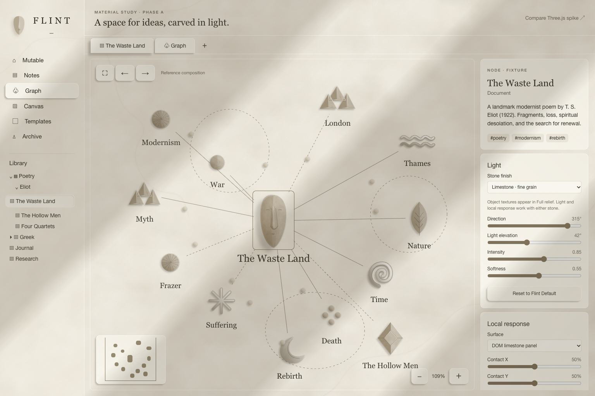
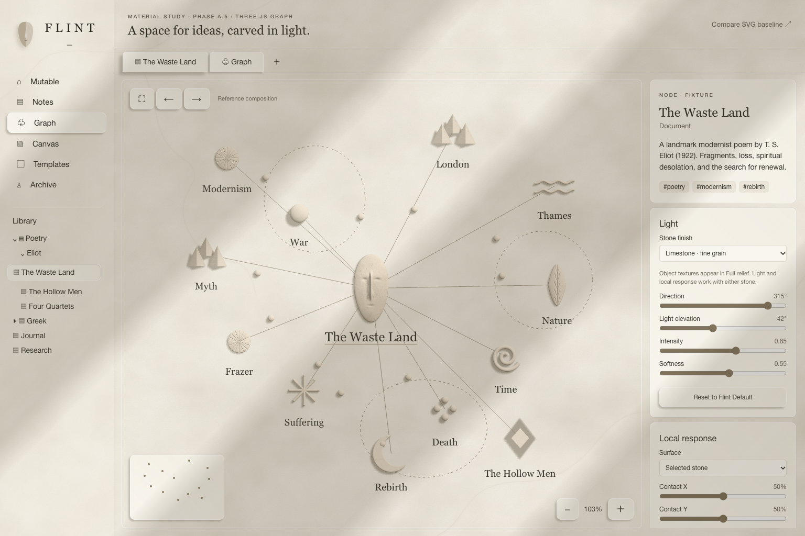

<!doctype html>
<html lang="en">
<meta charset="utf-8">
<meta name="viewport" content="width=device-width,initial-scale=1">
<title>Flint — Graph renderer comparison</title>
<style>
body{margin:0;background:#f4f1e8;color:#292820;font:14px/1.5 system-ui}header{padding:20px 24px;border-bottom:1px solid #c6bcaa}h1{font:26px Georgia,serif;margin:0 0 12px}a{color:#635b49}nav{display:flex;gap:20px;flex-wrap:wrap}label{display:inline-flex;gap:8px;align-items:center}main{display:grid;grid-template-columns:repeat(2,minmax(0,1fr));gap:16px;padding:20px}main.with-original{grid-template-columns:repeat(3,minmax(0,1fr))}figure{margin:0;min-width:0}h2{font:20px Georgia,serif;margin:0 0 10px}.viewport{overflow:auto;border:1px solid #c6bcaa;background:#eee9df;max-height:80vh}.viewport img{display:block;width:calc(100% * var(--zoom,1));max-width:none}figcaption{margin:8px 0;color:#645e52}#original{display:none}main.with-original #original{display:block}footer{padding:0 24px 24px;color:#645e52}@media(max-width:850px){main,main.with-original{grid-template-columns:1fr}}
</style>
<header><h1>Flint — Graph materiality comparison</h1><nav><a href="../flint-material">Open SVG study</a><a href="../flint-material-three">Open Three.js spike</a><label>Light <select id="light"><option value="default">Default · 315°</option><option value="reversed">Opposite · 135°</option></select></label><label>Inspect scale <input id="zoom" type="range" min="1" max="3" step=".1" value="1"></label><label>Add original supplied concept <input id="reference" type="file" accept="image/*"></label></nav></header>
<main id="comparison"><figure id="original"><h2>Original supplied concept</h2><div class="viewport"></div><figcaption>Local reference; displayed without uploading or altering the file.</figcaption></figure><figure><h2>SVG Phase A baseline</h2><div class="viewport"></div><figcaption>13-node reference. HTML/CSS/SVG, full relief.</figcaption></figure><figure><h2>Three.js Graph spike</h2><div class="viewport"></div><figcaption>Same fixture/light and HTML shell. Orthographic Graph geometry.</figcaption></figure></main>
<footer>Both implementation images are unretouched browser captures at 1536 × 1024. Fit views differ slightly (SVG 109%, Three 103%). The original remains the visual authority. This page compares the spike; it does not approve a production migration.</footer>
<script>
const light=document.getElementById('light'),comparison=document.getElementById('comparison');
light.addEventListener('change',()=>{const reversed=light.value==='reversed';document.getElementById('svg').src='assets/flint/phase-a5-svg-'+(reversed?'light-reversed':'reference')+'.png';document.getElementById('three').src='assets/flint/phase-a5-three-'+(reversed?'light-reversed':'reference-final')+'.png'});
document.getElementById('zoom').addEventListener('input',e=>comparison.style.setProperty('--zoom',e.target.value));
let originalURL;
document.getElementById('reference').addEventListener('change',e=>{const file=e.target.files[0];if(!file)return;if(originalURL)URL.revokeObjectURL(originalURL);originalURL=URL.createObjectURL(file);document.getElementById('original-image').src=originalURL;comparison.classList.add('with-original')});
window.addEventListener('pagehide',()=>{if(originalURL)URL.revokeObjectURL(originalURL)});
</script>
</html>
